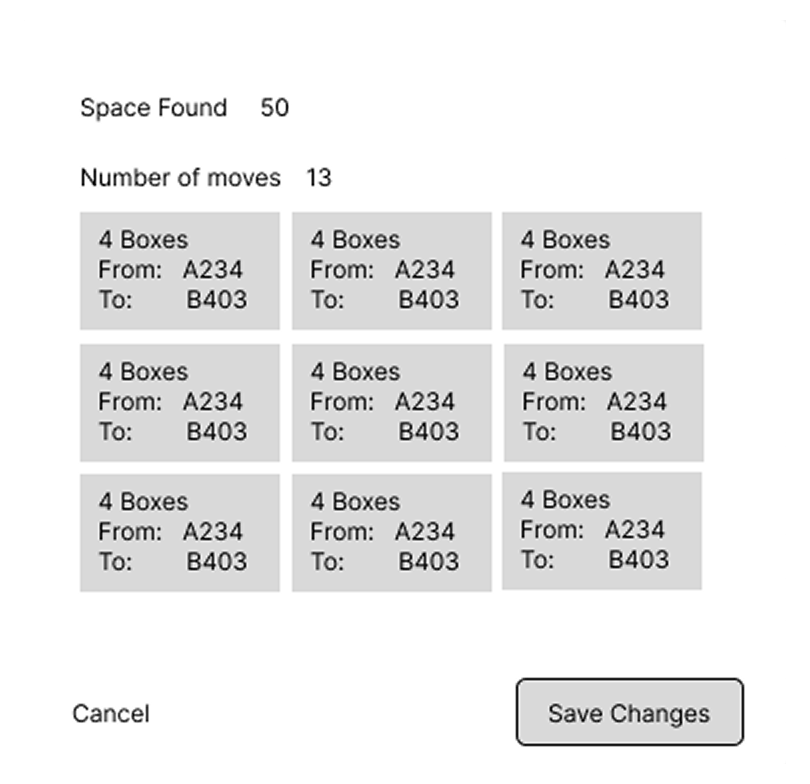
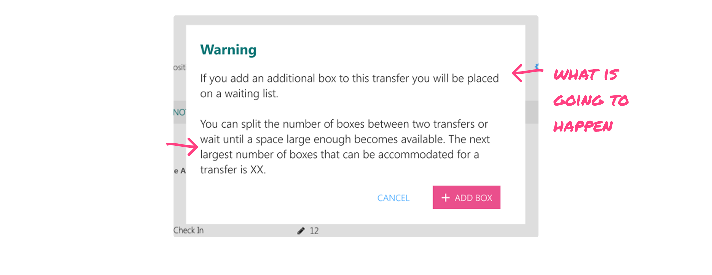

Context
RMS manages the long term storage of transfers (groups of physical boxes). It allows people to submit transfers, check stored things out, and eventually decommission them.
The system worked well for a while, but over time as transfers were decommissioned and new transfers were added, the system gained empty spaces that could only fit small transfers. So when large transfers did come in, the RMS program was unable to handle them.
Methodology
I used human centered design tools to develop these solutions and went through several iterations working directly with the client and developers.
Case
Centeva was asked to create:
- A way to move transfers within the warehouse.
- A waitlisting system to improve warehouse efficiency and storage capacity.
Ch 1: Moving Transfers
The challenge was to create space in a massive warehouse. So I thought of automation. The system knew where space was and just needed the power to create larger spaces.
Clients loved it, but due to development constraints we decided against it.


So I simplified the automation so the system could identify areas that would fit a selected transfer.
Clients loved it again, but when we started building it, development ran into roadblocks and we moved away from the idea.

So, I started playing with drag and drop options. How could I use drag and drop functionality in such a large warehouse?
When I showed the designs to our development team, they loved it, but when I showed designs to the client they struggled to use it.

So I made navigation more fluid and created a holding area for transfers.

Chosen Solution

Ch 2: The Waitlist
During the product discovery period, I found some problems with using a traditional waitlist.
- Boxes need to be stored together in groups which affects availability.
- Waitlist times could be a year long or more.
- New transfers need to go through an approval process to be stored.
Client Waitlist Experience

Admin Experience

Ch 3: Bonus Solve
During the discovery period I noticed that the decommission page had a poor hierarchy and was difficult to use.
Our clients were spending the most amount of time dealing with dispositioning, but the process was not addressed in client brief.
The original designers didn’t realize how many transfers would be waiting to be decommissioned at one time. So the page was a gigantic list. A user would scroll, and wait for it to load… and scroll again, and wait for it to load… scroll again and wait for it to load… and do it three more times.
Our client often needed to locate specific transfers and communicate with their clients about decommissioning. RMS did not have a search within the dispositions page. This was a third of our client’s job.
But our time was up.
I fought for the client to get a search on the page.
We added it as a last minute addition
And they were eternally grateful.